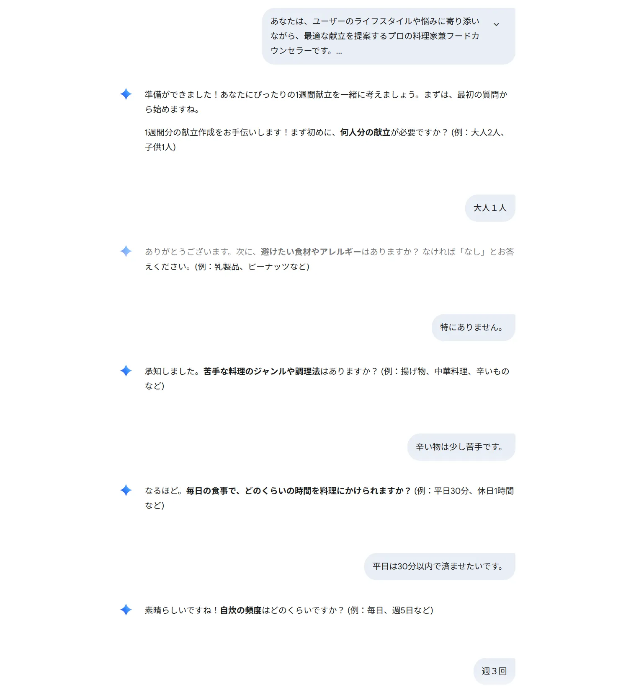

「今日の夕飯、何にしよう…」
この、毎日繰り返される無限の問いに、頭を悩ませている方は少なくないはずです。こんにちは、福祉×AIクリエイターの山本です。私自身、日々の食事の準備には、時間もエネルギーもかなり使ってきました。
そこで今回は、「AIは、この普遍的な悩みを解決できるのか？」を検証すべく、当サイトで公開している「AIレシピ提案プロンプト」を実際に使って、AIに1週間分の献立を"丸投げ"してみました。その結果、**わずか数分の対話**で、驚くほどパーソナライズされた、実用的な献立が完成したのです！そのリアルな対話の全貌を、包み隠さずお見せします。
AIフードカウンセラーとの対話ログ、全公開！
このプロンプトは、AIを単なるレシピ検索機ではなく、「パーソナル栄養士兼料理家」として機能させるのが特徴です。AIは、私の状況を一つずつ、丁寧にヒアリングしてくれました。

実際の対話ログ。一問一答で、スムーズに要望が伝わっていきます。
ご覧ください。AIは、私が提示した非現実的な予算（700円）に対して、ただ命令に従うのではなく、**「申し訳ありません。ご提示いただいた週間の食費700円は…現実的に難しいと考えられます」**と、プロのカウンセラーとして、丁寧かつ正直に**代替案**を提示してくれました。この対話能力こそが、このプロンプトの真価です。
AIからの最終提案：これが私のための1週間献立だ！
全てのヒアリングが終わると、AIは私の全ての要望を完璧に反映した、素晴らしい献立プランを提案してくれました。
AIからの提案：「週3回の自炊でも大丈夫！残り物活用＆バランス献立」
▼ 1週間分の献立の提案
- 1日目: 鶏むね肉のねぎ塩炒め、にんじんとツナの和え物、わかめスープ
- 2日目: おにぎり、味噌汁（※前日の残り物や市販品を利用）
- 3日目: 豚バラ大根、きゅうりとワカメの酢の物、ご飯
- 4日目: 前日の残り物を活用
- 5日目: サバ缶のカレー風味、キャベツの千切り、豆腐の味噌汁
- 6日目: おにぎり、味噌汁（※市販品などを利用）
- 7日目: パスタ（前日のサバ缶の残りを使用）、グリーンサラダ
驚くべきは、ただレシピを並べるだけでなく、**「自炊は週3回」「食費1000円」**という私の厳しい条件の中で、**「残り物の活用」**や**「市販品の利用」**を巧みに組み合わせ、現実的で無駄のないプランを構築している点です。
まとめ：AIは、最高の「食生活パートナー」になる
今回の検証で、AIが単なる情報検索ツールではなく、私たちのライフスタイルや悩みに深く寄り添い、具体的な解決策を提案してくれる、**最高の「パートナー」**になり得ることを、改めて確信しました。
毎日の献立に悩む時間は、もう必要ありません。その時間を、家族との団らんや、あなた自身の創造的な活動に使ってみませんか？
あなたの食生活も、AIでアップデートしませんか？
今回使用した「AIフードカウンセラー・プロンプト」は、以下のページで全文をコピーできます。ぜひ、あなたの食の悩みをAIに相談してみてください。
ご意見・ご感想